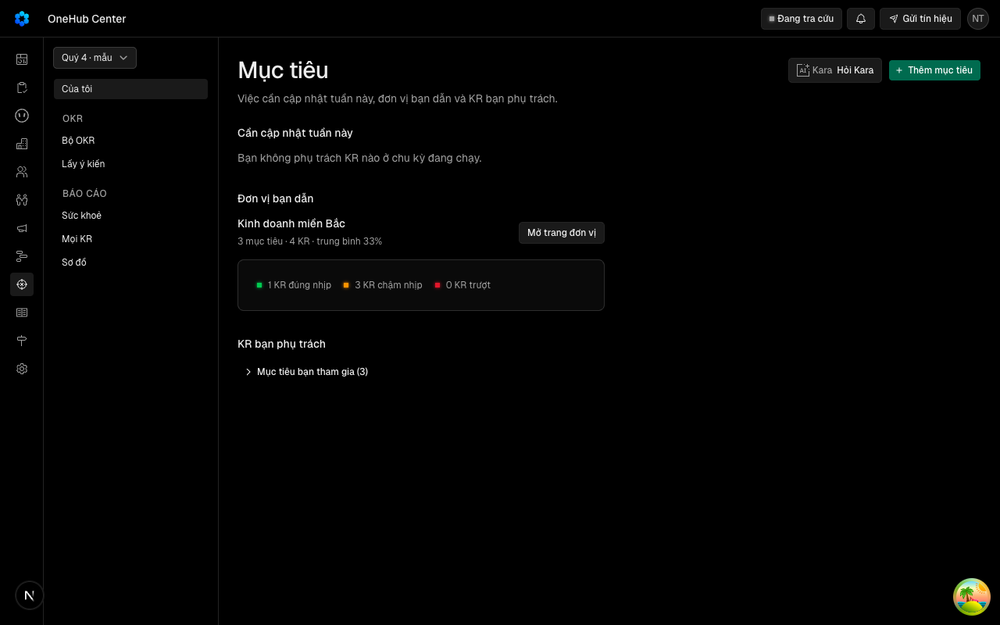
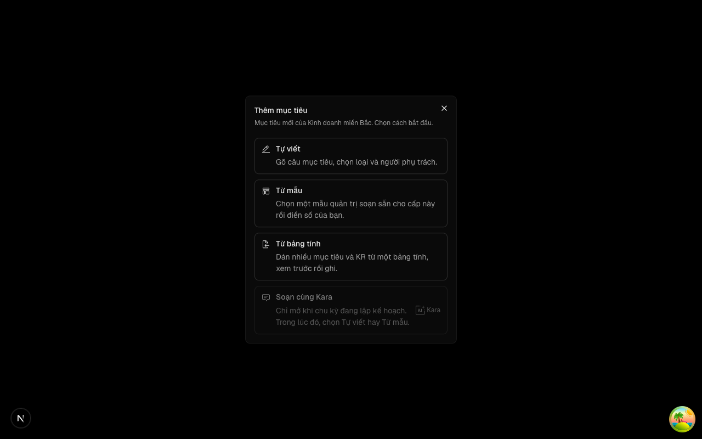
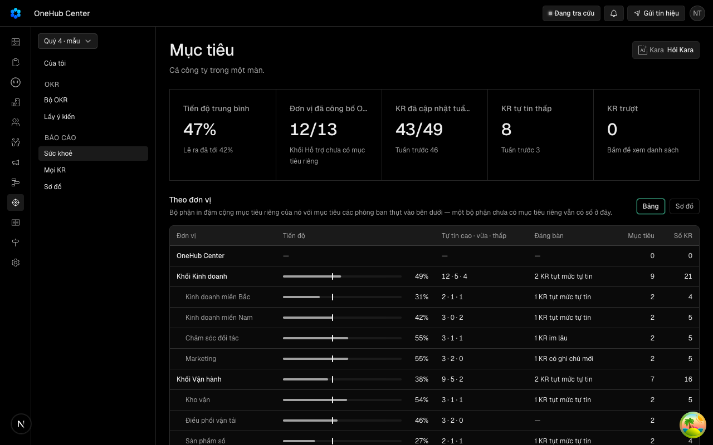
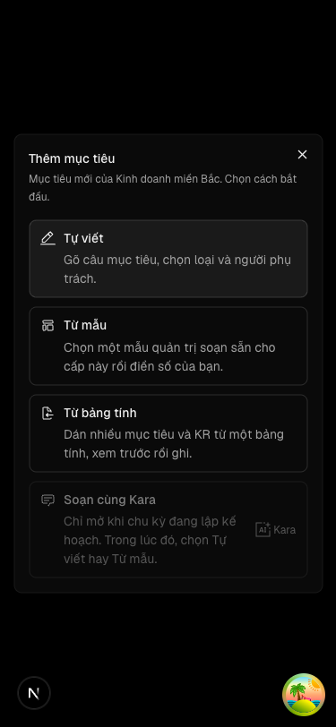

"Trưởng đơn vị bấm Thêm mục tiêu và chọn một đường trong một hộp: tự viết, từ mẫu, từ bảng tính hay soạn cùng Kara; ở Báo cáo không có nút tạo nào"
Vì sao làm
Sáu đường tạo mục tiêu ở bốn nơi; đầu trang sáu điều khiển; nút chính hiện cả trên màn chỉ đọc, trái nếp «Trang chỉ đọc không có nút chính». Tability: một nút mở hộp chọn đường.
Đã hứa
- AC-1 — Given người sửa được đơn vị đích mở Của tôi hoặc Bộ OKR ở máy tính, ở bất kỳ pha nào của chu kỳ, When đầu trang dựng xong, Then hàng nút đầu trang (`[data-hang-hanh-dong]`) chứa đúng một nút chính — «Thêm mục tiêu» (`data-nut="them-muc-tieu"`), đứng cuối hàng — và ngoài nó chỉ còn «Hỏi Kara» khi màn có nút đó; không còn nút «…» (`data-nut="them-cach"`), mục «Nhập từ bảng tính», nhóm Soạn (`[data-nhom-soan]`) hay nút «i» của Soạn. Trong lúc quyền còn tải, chỗ của «Thêm mục tiêu» là khung chờ, không phải nút bấm được.
- AC-2 — Given bất kỳ vai nào mở Lấy ý kiến, Sức khoẻ, Sơ đồ hoặc sơ đồ quanh một mục tiêu, When đầu trang dựng xong, Then đầu trang không có nút chính nào và không có nút tạo nào (`them-muc-tieu`, `them-cach`, `nhap-bang-tinh`, `[data-nhom-soan]`), kể cả trong lúc quyền còn tải (không khung chờ ở chỗ nút chính cũ); nút trong thân trang (mở lượt Lấy ý kiến, Xuất kỳ) giữ nguyên.
- AC-3 — Given người sửa được đơn vị đích ở Của tôi hoặc Bộ OKR, When bấm «Thêm mục tiêu», Then một hộp thoại mở với tiêu đề «Thêm mục tiêu» và một câu gọi tên đơn vị đích, liệt đúng bốn đường theo thứ tự Tự viết · Từ mẫu · Từ bảng tính · Soạn cùng Kara, mỗi đường là một nút trọn dòng có tiêu đề và một câu mô tả, dòng Soạn cùng Kara mang dấu Kara; hộp mở ghi trên đường dẫn nên tải lại vẫn mở; Esc hay nút đóng đóng hộp, gỡ tham số và đưa focus về «Thêm mục tiêu»; mọi chữ mới có ở cả tiếng Việt và tiếng Anh.
- AC-4 — (cross-layer) Given hộp đang mở, When chọn «Tự viết», Then hộp chọn đóng và ngăn tạo mục tiêu mở cho đúng đơn vị đích (từ Của tôi: sang Bộ OKR của đơn vị đó với ngăn mở); ngăn không còn nút «Bắt đầu từ mẫu»; điền tên và lưu thì `okr.createObjective` được gọi với đơn vị và chu kỳ đích, và sau khi tải lại mục tiêu mới nằm trong Bộ OKR của đơn vị đó.
- AC-5 — (cross-layer) Given hộp đang mở và cấp của đơn vị đích có mẫu OKR, When chọn «Từ mẫu», Then ngăn mở thẳng ở bước chọn mẫu của cấp đó (từ Của tôi: sang Bộ OKR của đơn vị đó với ngăn ở bước chọn mẫu); chọn một mẫu rồi lưu thì `okr.taoTuMau` được gọi với đơn vị và chu kỳ đích; bước mẫu chỉ còn lối quay lại «Chọn mẫu khác» (không còn «Viết mục tiêu tay»). Khi cấp của đơn vị đích chưa có mẫu, dòng «Từ mẫu» khoá (`aria-disabled`) và câu mô tả của nó nói chưa có mẫu cho cấp này.
- AC-6 — (cross-layer) Given hộp đang mở, When chọn «Từ bảng tính», Then hộp chọn đóng và hộp nhập OKR mở với chu kỳ và đơn vị đích điền sẵn (từ Của tôi: sang Bộ OKR của đơn vị đó với hộp nhập mở); dán lô rồi xem trước gọi `okr.previewImport`, ghi gọi `okr.applyImport`, như hôm nay.
- AC-7 — (cross-layer) Given hộp đang mở ở pha lập kế hoạch và Kara mở được cho đơn vị đích, When chọn «Soạn cùng Kara», Then `okr.soanMo` được gọi và cuộc soạn mở trong khung bản ghi; khi đơn vị đã có cuộc đang mở, dòng đọc «Tiếp cuộc đang soạn» và chọn nó mở lại đúng cuộc đó, không mở cuộc mới. Khi chu kỳ không ở pha lập kế hoạch, hoặc hết cuộc, hết trần tháng, Kara chưa bật cho đơn vị, chưa cấu hình, hay người không có quyền soạn, dòng khoá (`aria-disabled`) và câu mô tả là câu lý do của khoá đó.
- AC-8 — Given người không sửa được đơn vị đích (thành viên thường, người không dẫn đơn vị nào), When mở Của tôi hoặc Bộ OKR, Then «Thêm mục tiêu» khoá kèm dòng lý do như hôm nay; mở thẳng đường dẫn có tham số hộp chọn hay tham số của một đường thì không hộp nào mở, tham số bị gỡ khỏi đường dẫn và không thủ tục ghi nào được gọi.
- AC-9 — Given điện thoại 375×812 và máy tính 1280×800, When trưởng đơn vị bấm «Thêm mục tiêu» ở Của tôi và ở Bộ OKR, Then hộp vừa màn, bốn dòng đọc trọn không bị cắt chữ, mỗi dòng bấm được ở mọi điểm trên dòng, trang không tràn ngang; đầu trang Sức khoẻ không có nút chính; kèm ảnh cho người xem.
Thiết kế
docs/superpowers/specs/2026-10-21-mot-nut-tao-muc-tieu-design.md
Quyết định
- 2026-10-21 · Máy · approach · S1 — Bốn đường tạo nằm trong một hộp thoại mở từ nút «Thêm mục tiêu», không trong menu xổ dưới nút.Câu giao của hàng VK9 nói «chọn một đường trong một hộp»; menu xổ không có chỗ cho câu mô tả và lý do khoá của từng đường.
- 2026-10-21 · Máy · approach · S1 — Lấy ý kiến cũng bỏ nút «Thêm mục tiêu», dù nó thuộc nhóm OKR chứ không thuộc Báo cáo.Ngưỡng đã ký ở Cổng Đáng chỉ cho nút chính ở Của tôi và Bộ OKR, và docs/design.md nói trang chỉ đọc không có nút chính.
- 2026-10-21 · Máy · approach · S1 — «Hỏi Kara» ở lại đầu trang mọi màn của khu, kể cả màn chỉ đọc, dạng nút viền.Hỏi Kara không tạo gì nên không phạm ngưỡng; luật Kara giữ một nút gọi Kara mỗi màn.
- 2026-10-21 · Máy · approach · S1 — Đường không đi được vẫn hiện trong hộp, khoá kèm câu lý do, không ẩn — kể cả Soạn cùng Kara ngoài pha lập kế hoạch, nơi hôm nay nút bị ẩn.docs/design.md đòi nút khoá có một dòng nói vì sao; ẩn đi thì người không biết đường đó có tồn tại.
- 2026-10-21 · Máy · descope · S1 — Bỏ nút «Bắt đầu từ mẫu» trong ngăn tạo mục tiêu và nút «Viết mục tiêu tay» ở bước mẫu; muốn đổi đường thì đóng ngăn, chọn lại trong hộp.Vấn đề của hàng là các đường tạo rải nhiều nơi; giữ hai nút chéo trong ngăn là giữ thêm một chỗ chọn đường.
- 2026-10-21 · Máy · approach · S1 — Bấm một dòng trong hộp là đi luôn sang đường đó, không có bước chọn rồi bấm «Tiếp».Không đường nào ghi gì lúc chọn — mỗi đường mở hộp riêng nơi người còn huỷ được.
- 2026-10-21 · Máy · approach · S1 — Ở Của tôi, hộp chọn mở tại chỗ; Tự viết, Từ mẫu, Từ bảng tính chuyển sang Bộ OKR của đơn vị đích với hộp của đường đó mở; Soạn cùng Kara mở khung bản ghi tại chỗ.Nút hôm nay ở Của tôi đã dẫn sang Bộ OKR của đơn vị đích với ngăn tạo mở (hanh-dong-khu.tsx dòng 272); giữ nơi đến ấy để mục tiêu vừa tạo hiện ngay trong danh sách của đơn vị.
- 2026-10-21 · Máy · descope · S1 — «Mang sang» không vào hộp chọn; nó ở lại màn chấm điểm.Câu giao kể đúng bốn đường; mang sang là việc khép kỳ, tạo bản nháp ở chu kỳ kế, không phải lối tạo đầu kỳ.
- 2026-10-21 · Máy · approach · S1 — Hỏi-1: 11 hồ sơ đã ký có thước đọc hàng nút cũ hay bấm đường cũ; máy khuyên chủ kho cho vòng này khai superseded_by trỏ AC của VK9 cho đúng các eval gãy rồi ghim lại một lượt.Luật tạm 18/10 cấm máy tự sửa thước hồ sơ đã ký; danh sách 11 hồ sơ ở design doc mục Rủi ro đã thấy.
- 2026-10-21 · Máy · descope · S1 — bỏ design-pass — hộp ghép từ Dialog và Item đã có theo đúng khuôn ChonMau của tu-mau.tsx; phiên S1 ngoài dãy không dựng máy chủ dev (cổng 3000 là của chủ kho); ảnh 1280 và 375 của hộp trình ở Cổng Bằng chứng qua E16.Hàng không đổi bố cục trang, chỉ gỡ nút đầu trang và thêm một hộp danh sách dùng thành phần sẵn có.
- 2026-10-21 · Người (Phan Le Manh) · approach · gate1 — Chủ kho duyệt cả ba câu theo khuyến nghị: Hỏi-1 khai superseded_by ở eval gãy của 11 hồ sơ đã ký trỏ AC của VK9 rồi ghim lại; Hỏi-2 bỏ design-pass; Hỏi-3 đường không đi được hiện khoá kèm lý do.người chọn ở Cổng Phạm vi: duyệt (thẻ ghi «duyệt» là nhận khuyến nghị của cả ba câu Hỏi).
- 2026-10-21 · Người · seal · gate1 —
- 2026-10-21 · Máy · descope · S1 — Hỏi-2: bỏ design-pass — máy khuyên duyệt hộp chọn bằng hình luồng và chữ ở Cổng Phạm vi, ảnh thật 1280 và 375 ở Cổng Bằng chứng qua E16, để không thêm giờ trước S3.Phản biện context sạch chỉ ra lối dựng bản mẫu còn sống (phiên đo tien-de tự dựng cổng riêng), nên bỏ khoảnh khắc nhìn hình trước duyệt là việc người quyết.
- 2026-10-21 · Máy · approach · S1 — Hỏi-3: đường không đi được trong hộp — máy khuyên hiện khoá kèm câu lý do (Từ mẫu khi chưa có mẫu, Soạn cùng Kara ngoài pha lập kế hoạch và các khoá của Kara), không ẩn.Phản biện chỉ ra câu trích docs/design.md chỉ đòi nút khoá có lý do, không chọn giữa hiện-khoá và ẩn; hôm nay nút Soạn bị ẩn ngoài pha lập kế hoạch.
- 2026-10-21 · Máy · approach · S2 — Hộp chọn có thêm lối «Các cuộc đã soạn (N/3)» dưới bốn dòng khi đơn vị đã dùng cuộc soạn, thay cho nút «i» trên đầu trang mà vòng này gỡ.Hôm nay người hết cuộc chỉ xem lại được các cuộc đã dùng qua nút «i» cạnh nút Soạn ở đầu trang (soan/nut-soan.tsx); gỡ đầu trang mà không chuyển lối này là mất một khả năng đang có.
- 2026-10-21 · Máy · approach · S2 — Khai superseded_by cho eval gãy của 11 hồ sơ đã ký ngay trong S3, nhưng ghim lại 11 hồ sơ chỉ sau khi VK9 được ký ở Cổng Bằng chứng.GUIDE của kit 2.24 chỉ nhận con trỏ superseded_by khi hồ sơ thay đã có chữ ký người (lỗi ho-so-thay-chua-ky) và design doc của nó liệt bảng eval cũ thay bởi vòng này.
- 2026-10-21 · Máy · fix · S3 — Tên đơn vị đích đi qua hook useTenDon thay vì thêm trường tenDon vào QuyenKhu như kế hoạch ghi.Bài vo-khu-muc-tieu.dom.tsx của hồ sơ VK2 đã ký tự dựng một QuyenKhu; thêm trường bắt buộc làm bài đó lỗi kiểu, mà luật tạm 18/10 cấm sửa tệp kiểm của hồ sơ đã ký.
- 2026-10-21 · Máy · fix · S3 — Chiều đỏ của bàn đo màn (E3, E8) chạy trên chính phiên đo bằng EVAL=chieu-do — cấy một nút chính giả vào đầu trang Sức khoẻ, và bỏ bước lưu ở đường Tự viết — thay vì dựng một bản sao cây có HanhDongKhu sửa như expected ghi.Dựng bản sao cây cần một máy chủ app thứ hai trên cổng khác cho mỗi lượt chấm; cấy lỗi trên trang đang chạy chứng được cùng điều — bộ đếm nút chính và bước đọc lại sau tải lại không mù.
- 2026-10-22 · Người (Phan Le Manh) · fix · S3 — Lối (a) của chủ kho: xoá 79 ca đo hành vi vòng này gỡ ở bảy tệp kiểm (56 ca đỏ, 23 ca xanh chỉ đo việc vắng nút soạn đã gỡ), khai not-run trỏ AC của vòng này cho chín eval mất hết ca (khung-okr-truoc-r1 E2 E4 E5, okr-to-chuc-va E10, dieu-huong-khu-muc-tieu E3 E6 E7, soan-okr-song-lai E1 E7), sửa chỗ gọi ở hai ca chỉ hỏng vì đổi tên, chuyển ba nhánh phản hồi soanMo chưa có ca thay sang ca mnt-soan mới.Bảng «Eval cũ thay bởi vòng này» trong design doc liệt từng eval và ca thay; ca mnt-soan mới đỏ đúng ba thông điệp khi phá nhánh cuocDang, refetch và nhánh lỗi của duong-soan.ts; mũi ky-hoi-y của rang/hai-chieu.mjs (dieu-huong-khu-muc-tieu E4) bỏ vì kỳ chỉ khác kỳ đang chạy ở Lấy ý kiến, nơi vòng này gỡ nút tạo.
- 2026-10-22 · Máy · fix · S4-r1 — Sửa năm chỗ yếu thước mà S4 vòng 1 chỉ ra trong bài kiểm của chính vòng này: ba ca tạo đo quan hệ đơn vị và chu kỳ đang xem; bàn đo màn E3 đếm trong đầu trang và dừng mã 2 khi màn không mở; ba ô khoá hết trần, chưa cấu hình, không quyền dựng thành DOM; hai trang server tính một ô tĩnh thay vì nhân trục vai; kiểm 0 lần ghi có đối chứng bộ đếm.Fixture mới có chu kỳ n27 và người dẫn P2 P3 đang xem P3: phá theo-don-vi.tsx đưa phòng ban dẫn đầu hay chu kỳ mặc định thì mnt-tu-viet, mnt-tu-mau, mnt-bang-tinh đỏ đúng thông điệp ghim; phá cauNoi, ngayMoLai, nhánh không quyền thì mnt-soan đỏ; bàn đo màn EVAL=chieu-do in SAI NUT CHINH suc-khoe truong 1 mã 1, lượt xanh 14 DUNG.
- 2026-10-22 · Người (Phan Le Manh) · revisit · gate2 — Ngoài-1: ghi Known limitsNgười ký chọn tại Cổng Bằng chứng theo khuyến nghị của thẻ.
- 2026-10-22 · Người (Phan Le Manh) · revisit · gate2 — Ngoài-2: ghi Known limitsNgười ký chọn tại Cổng Bằng chứng theo khuyến nghị của thẻ.
- 2026-10-22 · Người (Phan Le Manh) · revisit · gate2 — Ngoài-3: mở hợp đồng mớiNgười ký chọn tại Cổng Bằng chứng theo khuyến nghị của thẻ.
- 2026-10-22 · Người (Phan Le Manh) · revisit · gate2 — Ngoài-4: ghi Known limitsNgười ký chọn tại Cổng Bằng chứng theo khuyến nghị của thẻ.
- 2026-10-22 · Người (Phan Le Manh) · revisit · gate2 — Ngoài-5: ghi Known limitsNgười ký chọn tại Cổng Bằng chứng theo khuyến nghị của thẻ.
- 2026-10-22 · Người (Phan Le Manh) · revisit · gate2 — Ngoài-6: ghi Known limitsNgười ký chọn tại Cổng Bằng chứng theo khuyến nghị của thẻ.
- 2026-10-22 · Người (Phan Le Manh) · revisit · gate2 — Ngoài-7: ghi Known limitsNgười ký chọn tại Cổng Bằng chứng theo khuyến nghị của thẻ.
- 2026-10-22 · Người (Phan Le Manh) · revisit · gate2 — Ngoài-8: ghi Known limitsNgười ký chọn tại Cổng Bằng chứng theo khuyến nghị của thẻ.
- 2026-10-22 · Người (Phan Le Manh) · revisit · gate2 — Ngoài-9: mở hợp đồng mớiNgười ký chọn tại Cổng Bằng chứng theo khuyến nghị của thẻ.
- 2026-10-22 · Người (Phan Le Manh) · revisit · gate2 — Ngoài-10: ghi Known limitsNgười ký chọn tại Cổng Bằng chứng theo khuyến nghị của thẻ.
- 2026-10-22 · Người (Phan Le Manh) · revisit · gate2 — Ngoài-11: ghi Known limitsNgười ký chọn tại Cổng Bằng chứng theo khuyến nghị của thẻ.
- 2026-10-22 · Người (Phan Le Manh) · revisit · gate2 — Ngoài-12: ghi Known limitsNgười ký chọn tại Cổng Bằng chứng theo khuyến nghị của thẻ.
- 2026-10-22 · Người (Phan Le Manh) · revisit · gate2 — Ngoài-13: ghi Known limitsNgười ký chọn tại Cổng Bằng chứng theo khuyến nghị của thẻ.
- 2026-10-22 · Người (Phan Le Manh) · revisit · gate2 — cắt/hoãn: đồng ý cắtNgười ký đồng ý phạm vi đã khai ở Cổng Phạm vi.
- 2026-10-22 · Người (Phan Le Manh) · revisit · gate2 — Treo: phê hết — các quyết định ghi sau Cổng Phạm vi được người ký phêNgười ký phê các dòng sổ ghi sau Cổng Phạm vi.
- 2026-10-22 · Máy · fix · S4-r2 — Sửa lỗi tìm thấy sau chữ ký: ở Của tôi chọn Tự viết, Từ mẫu hay Từ bảng tính chỉ đóng hộp vì lần nuqs xoá tham số hộp đè mất router.push sang Bộ OKR; nhánh chuyển trang nay chỉ router.push, ba ca cua-toi và bàn đo màn E8 đo đường này.Bàn đo dieu-huong-khu-muc-tieu (sửa theo V2-20 b2) đi từ Của tôi in SAI AC-3 trên mã cũ, DUNG sau sửa; ba ca mnt cua-toi đỏ «ghi URL tai cho 1 lan» trên mã cũ; bàn đo VK9 cấy lại dòng cũ in SAI TU VIET CUA TOI dung o /onehub-center/okr mã 1, bản sửa 15 DUNG.
Bằng chứng
Các eval
| Eval | Tiêu chí | Loại | Verdict | run_id | verified_at |
|---|---|---|---|---|---|
| E1 | AC-1 | test | PASS | minted-mot-nut-tao-muc-tieu-E1-r3 | 2026-10-22T15:45:11Z |
| E2 | AC-2 | test | PASS | minted-mot-nut-tao-muc-tieu-E2-r3 | 2026-10-22T15:45:11Z |
| E3 | AC-2 | script | PASS | minted-mot-nut-tao-muc-tieu-E3-r3 | 2026-10-22T15:45:11Z |
| E4 | AC-3 | test | PASS | minted-mot-nut-tao-muc-tieu-E4-r3 | 2026-10-22T15:45:11Z |
| E5 | AC-3 | judgment | PASS | — | — |
| E6 | AC-4 | test | PASS | minted-mot-nut-tao-muc-tieu-E6-r3 | 2026-10-22T15:45:11Z |
| E7 | AC-4 | test | PASS | minted-mot-nut-tao-muc-tieu-E7-r1 | 2026-10-22T12:07:09Z |
| E8 | AC-4 | script | PASS | minted-mot-nut-tao-muc-tieu-E8-r3 | 2026-10-22T15:45:11Z |
| E9 | AC-5 | test | PASS | minted-mot-nut-tao-muc-tieu-E9-r3 | 2026-10-22T15:45:11Z |
| E10 | AC-5 | test | PASS | minted-mot-nut-tao-muc-tieu-E10-r1 | 2026-10-22T12:07:09Z |
| E11 | AC-6 | test | PASS | minted-mot-nut-tao-muc-tieu-E11-r3 | 2026-10-22T15:45:11Z |
| E12 | AC-6 | test | PASS | minted-mot-nut-tao-muc-tieu-E12-r1 | 2026-10-22T12:07:09Z |
| E13 | AC-7 | test | PASS | minted-mot-nut-tao-muc-tieu-E13-r3 | 2026-10-22T15:45:11Z |
| E14 | AC-7 | test | PASS | minted-mot-nut-tao-muc-tieu-E14-r1 | 2026-10-22T12:07:09Z |
| E15 | AC-8 | test | PASS | minted-mot-nut-tao-muc-tieu-E15-r3 | 2026-10-22T15:45:11Z |
| E16 | AC-9 | ui-check | PASS | minted-mot-nut-tao-muc-tieu-E16-r3 | 2026-10-22T15:45:11Z |
Chi tiết từng eval
PASS E1 · test
AC-1: Given người sửa được đơn vị đích mở Của tôi hoặc Bộ OKR ở máy tính, ở bất kỳ pha nào của chu kỳ, When đầu trang dựng xong, Then hàng nút đầu trang (`[data-hang-hanh-dong]`) chứa đúng một nút chính — «Thêm mục tiêu» (`data-nut="them-muc-tieu"`), đứng cuối hàng — và ngoài nó chỉ còn «Hỏi Kara» khi màn có nút đó; không còn nút «…» (`data-nut="them-cach"`), mục «Nhập từ bảng tính», nhóm Soạn (`[data-nhom-soan]`) hay nút «i» của Soạn. Trong lúc quyền còn tải, chỗ của «Thêm mục tiêu» là khung chờ, không phải nút bấm được.
Ran 1 test across 1 file. [3.47s]
PASS E2 · test
AC-2: Given bất kỳ vai nào mở Lấy ý kiến, Sức khoẻ, Sơ đồ hoặc sơ đồ quanh một mục tiêu, When đầu trang dựng xong, Then đầu trang không có nút chính nào và không có nút tạo nào (`them-muc-tieu`, `them-cach`, `nhap-bang-tinh`, `[data-nhom-soan]`), kể cả trong lúc quyền còn tải (không khung chờ ở chỗ nút chính cũ); nút trong thân trang (mở lượt Lấy ý kiến, Xuất kỳ) giữ nguyên.
Ran 1 test across 1 file. [2.55s]
PASS E3 · script
AC-2: Given bất kỳ vai nào mở Lấy ý kiến, Sức khoẻ, Sơ đồ hoặc sơ đồ quanh một mục tiêu, When đầu trang dựng xong, Then đầu trang không có nút chính nào và không có nút tạo nào (`them-muc-tieu`, `them-cach`, `nhap-bang-tinh`, `[data-nhom-soan]`), kể cả trong lúc quyền còn tải (không khung chờ ở chỗ nút chính cũ); nút trong thân trang (mở lượt Lấy ý kiến, Xuất kỳ) giữ nguyên.
phien-do: xong — mã 0
PASS E4 · test
AC-3: Given người sửa được đơn vị đích ở Của tôi hoặc Bộ OKR, When bấm «Thêm mục tiêu», Then một hộp thoại mở với tiêu đề «Thêm mục tiêu» và một câu gọi tên đơn vị đích, liệt đúng bốn đường theo thứ tự Tự viết · Từ mẫu · Từ bảng tính · Soạn cùng Kara, mỗi đường là một nút trọn dòng có tiêu đề và một câu mô tả, dòng Soạn cùng Kara mang dấu Kara; hộp mở ghi trên đường dẫn nên tải lại vẫn mở; Esc hay nút đóng đóng hộp, gỡ tham số và đưa focus về «Thêm mục tiêu»; mọi chữ mới có ở cả tiếng Việt và tiếng Anh.
Ran 5 tests across 1 file. [2.83s]
PASS E5 · judgment
AC-3: Given người sửa được đơn vị đích ở Của tôi hoặc Bộ OKR, When bấm «Thêm mục tiêu», Then một hộp thoại mở với tiêu đề «Thêm mục tiêu» và một câu gọi tên đơn vị đích, liệt đúng bốn đường theo thứ tự Tự viết · Từ mẫu · Từ bảng tính · Soạn cùng Kara, mỗi đường là một nút trọn dòng có tiêu đề và một câu mô tả, dòng Soạn cùng Kara mang dấu Kara; hộp mở ghi trên đường dẫn nên tải lại vẫn mở; Esc hay nút đóng đóng hộp, gỡ tham số và đưa focus về «Thêm mục tiêu»; mọi chữ mới có ở cả tiếng Việt và tiếng Anh.
Phán đoán: Cả ba góc nhìn cùng đề xuất PASS; bốn câu mô tả đường và các câu lý do khoá có mặt ở cả bản Việt lẫn bản Anh, nói việc người làm, gọi AI là Kara, có lối đi tiếp.
PASS E6 · test
AC-4: (cross-layer) Given hộp đang mở, When chọn «Tự viết», Then hộp chọn đóng và ngăn tạo mục tiêu mở cho đúng đơn vị đích (từ Của tôi: sang Bộ OKR của đơn vị đó với ngăn mở); ngăn không còn nút «Bắt đầu từ mẫu»; điền tên và lưu thì `okr.createObjective` được gọi với đơn vị và chu kỳ đích, và sau khi tải lại mục tiêu mới nằm trong Bộ OKR của đơn vị đó.
Ran 2 tests across 1 file. [3.15s]
PASS E7 · test
AC-4: (cross-layer) Given hộp đang mở, When chọn «Tự viết», Then hộp chọn đóng và ngăn tạo mục tiêu mở cho đúng đơn vị đích (từ Của tôi: sang Bộ OKR của đơn vị đó với ngăn mở); ngăn không còn nút «Bắt đầu từ mẫu»; điền tên và lưu thì `okr.createObjective` được gọi với đơn vị và chu kỳ đích, và sau khi tải lại mục tiêu mới nằm trong Bộ OKR của đơn vị đó.
PASS E8 · script
AC-4: (cross-layer) Given hộp đang mở, When chọn «Tự viết», Then hộp chọn đóng và ngăn tạo mục tiêu mở cho đúng đơn vị đích (từ Của tôi: sang Bộ OKR của đơn vị đó với ngăn mở); ngăn không còn nút «Bắt đầu từ mẫu»; điền tên và lưu thì `okr.createObjective` được gọi với đơn vị và chu kỳ đích, và sau khi tải lại mục tiêu mới nằm trong Bộ OKR của đơn vị đó.
phien-do: xong — mã 0
PASS E9 · test
AC-5: (cross-layer) Given hộp đang mở và cấp của đơn vị đích có mẫu OKR, When chọn «Từ mẫu», Then ngăn mở thẳng ở bước chọn mẫu của cấp đó (từ Của tôi: sang Bộ OKR của đơn vị đó với ngăn ở bước chọn mẫu); chọn một mẫu rồi lưu thì `okr.taoTuMau` được gọi với đơn vị và chu kỳ đích; bước mẫu chỉ còn lối quay lại «Chọn mẫu khác» (không còn «Viết mục tiêu tay»). Khi cấp của đơn vị đích chưa có mẫu, dòng «Từ mẫu» khoá (`aria-disabled`) và câu mô tả của nó nói chưa có mẫu cho cấp này.
Ran 3 tests across 1 file. [2.77s]
PASS E10 · test
AC-5: (cross-layer) Given hộp đang mở và cấp của đơn vị đích có mẫu OKR, When chọn «Từ mẫu», Then ngăn mở thẳng ở bước chọn mẫu của cấp đó (từ Của tôi: sang Bộ OKR của đơn vị đó với ngăn ở bước chọn mẫu); chọn một mẫu rồi lưu thì `okr.taoTuMau` được gọi với đơn vị và chu kỳ đích; bước mẫu chỉ còn lối quay lại «Chọn mẫu khác» (không còn «Viết mục tiêu tay»). Khi cấp của đơn vị đích chưa có mẫu, dòng «Từ mẫu» khoá (`aria-disabled`) và câu mô tả của nó nói chưa có mẫu cho cấp này.
PASS E11 · test
AC-6: (cross-layer) Given hộp đang mở, When chọn «Từ bảng tính», Then hộp chọn đóng và hộp nhập OKR mở với chu kỳ và đơn vị đích điền sẵn (từ Của tôi: sang Bộ OKR của đơn vị đó với hộp nhập mở); dán lô rồi xem trước gọi `okr.previewImport`, ghi gọi `okr.applyImport`, như hôm nay.
Ran 2 tests across 1 file. [2.95s]
PASS E12 · test
AC-6: (cross-layer) Given hộp đang mở, When chọn «Từ bảng tính», Then hộp chọn đóng và hộp nhập OKR mở với chu kỳ và đơn vị đích điền sẵn (từ Của tôi: sang Bộ OKR của đơn vị đó với hộp nhập mở); dán lô rồi xem trước gọi `okr.previewImport`, ghi gọi `okr.applyImport`, như hôm nay.
PASS E13 · test
AC-7: (cross-layer) Given hộp đang mở ở pha lập kế hoạch và Kara mở được cho đơn vị đích, When chọn «Soạn cùng Kara», Then `okr.soanMo` được gọi và cuộc soạn mở trong khung bản ghi; khi đơn vị đã có cuộc đang mở, dòng đọc «Tiếp cuộc đang soạn» và chọn nó mở lại đúng cuộc đó, không mở cuộc mới. Khi chu kỳ không ở pha lập kế hoạch, hoặc hết cuộc, hết trần tháng, Kara chưa bật cho đơn vị, chưa cấu hình, hay người không có quyền soạn, dòng khoá (`aria-disabled`) và câu mô tả là câu lý do của khoá đó.
Ran 4 tests across 1 file. [3.99s]
PASS E14 · test
AC-7: (cross-layer) Given hộp đang mở ở pha lập kế hoạch và Kara mở được cho đơn vị đích, When chọn «Soạn cùng Kara», Then `okr.soanMo` được gọi và cuộc soạn mở trong khung bản ghi; khi đơn vị đã có cuộc đang mở, dòng đọc «Tiếp cuộc đang soạn» và chọn nó mở lại đúng cuộc đó, không mở cuộc mới. Khi chu kỳ không ở pha lập kế hoạch, hoặc hết cuộc, hết trần tháng, Kara chưa bật cho đơn vị, chưa cấu hình, hay người không có quyền soạn, dòng khoá (`aria-disabled`) và câu mô tả là câu lý do của khoá đó.
PASS E15 · test
AC-8: Given người không sửa được đơn vị đích (thành viên thường, người không dẫn đơn vị nào), When mở Của tôi hoặc Bộ OKR, Then «Thêm mục tiêu» khoá kèm dòng lý do như hôm nay; mở thẳng đường dẫn có tham số hộp chọn hay tham số của một đường thì không hộp nào mở, tham số bị gỡ khỏi đường dẫn và không thủ tục ghi nào được gọi.
Ran 1 test across 1 file. [3.86s]
PASS E16 · ui-check
AC-9: Given điện thoại 375×812 và máy tính 1280×800, When trưởng đơn vị bấm «Thêm mục tiêu» ở Của tôi và ở Bộ OKR, Then hộp vừa màn, bốn dòng đọc trọn không bị cắt chữ, mỗi dòng bấm được ở mọi điểm trên dòng, trang không tràn ngang; đầu trang Sức khoẻ không có nút chính; kèm ảnh cho người xem.





Vòng verify
- Round 1: các phát hiện trong hợp đồng về hình dạng bài đo (bàn đo E3, ma trận mnt-man-doc, ô đường dẫn mnt-khoa) — tổng kết REJECT. Returned to implementation.
- Round 2: 17/17 eval máy đạt sau khi sửa thước; sau đó có lỗi sau chữ ký (chọn đường ở Của tôi bị lần ghi URL tại chỗ đè mất), hạ về implemented để chấm lại.
- Round 3: chấm lại trên commit 091fe8c15; các eval chạm paths chạy lại, E7, E10, E12, E14 mang từ round 1; verified_at của round 3 lấy theo giờ mở ảnh 22:46 giờ VN.
Tài nguyên
Giới hạn và ngoài hợp đồng
- Trang riêng cho từng bộ OKR và thẻ con của nó (VK3); khi có, trang bộ mang nút như Bộ OKR hôm nay.
- Chế độ Soạn cả bộ OKR (VK10); vòng này đường «Soạn cùng Kara» mở cuộc soạn hiện có.
- «Mang sang» ở màn chấm điểm giữ nguyên chỗ.
- Nút trong thân trang (mở lượt Lấy ý kiến, Xuất kỳ, «Mở cuộc mới» trong khung soạn) không đổi.
- Không thủ tục API nào đổi; không thêm KR từ hộp.
- Ngoài-1: khi người không có quyền mở thẳng đường dẫn tạo mục tiêu, bài kiểm chỉ chứng minh hộp không mở, chưa bắt được nếu sau này có lần ghi dữ liệu lọt qua.
- Ngoài-2: nếu sau này có nút tạo lọt lại vào đầu trang Sơ đồ hay sơ đồ quanh mục tiêu qua một thành phần dựng ở trình duyệt, bài kiểm có thể không phát hiện.
- Ngoài-4: trong mã còn nút Soạn cũ không hiện ở màn nào, nên hai bản logic soạn có thể lệch nhau về sau.
- Ngoài-5: mở liên kết cũ dẫn thẳng vào bước chọn mẫu cho đơn vị chưa có mẫu thì thấy hộp trống và chỉ còn cách đóng lại.
- Ngoài-6: lúc danh sách mẫu còn đang tải hoặc tải lỗi, dòng «Từ mẫu» có thể báo sai là chưa có mẫu cho cấp này.
- Ngoài-7: người chỉ được xem có thể mở liên kết để thấy danh sách cuộc soạn của đơn vị dù không có quyền soạn.
- Ngoài-8: dòng bị khoá trong hộp «Thêm mục tiêu» bị làm mờ nên câu lý do khoá hơi khó đọc, nhất là với người nhìn kém.
- Ngoài-10: hiếm khi, bấm «Soạn cùng Kara» đúng lúc vừa hết lượt thì hộp đóng mà không báo vì sao.
- Ngoài-11: mở lại liên kết đang ở bước chọn mẫu khi đơn vị không còn mẫu thì ngăn chỉ còn danh sách trống và nút Huỷ.
- Ngoài-12: dòng bị khoá trong hộp có thể vẫn đổi nền khi rê chuột như bấm được, và bài kiểm hiện tại không bắt lỗi này.
- Ngoài-13: bàn đo màn không phát hiện nếu một lần bấm lưu sinh ra hai mục tiêu trùng tên.
Giao
chưa gộp vào onehub (nhánh production kho khai)
Giá trị
- Câu hỏi phép đo trả lời: đã đạt «Đầu trang khu chỉ còn một nút chính, chỉ ở Của tôi và Bộ OKR» chưa? — chưa đo
- Kết quả nào là SỐNG: Đầu trang khu chỉ còn một nút chính, chỉ ở Của tôi và Bộ OKR — chưa đo
- Kết quả nào là CHẾT: chưa đạt «Đầu trang khu chỉ còn một nút chính, chỉ ở Của tôi và Bộ OKR» khi hết timebox — chưa đo
- Timebox: 2026-10-26 (mốc Vỏ khu Mục tiêu — thanh bên khu, Bộ OKR, đổi tên, ngăn KR) — chưa đo